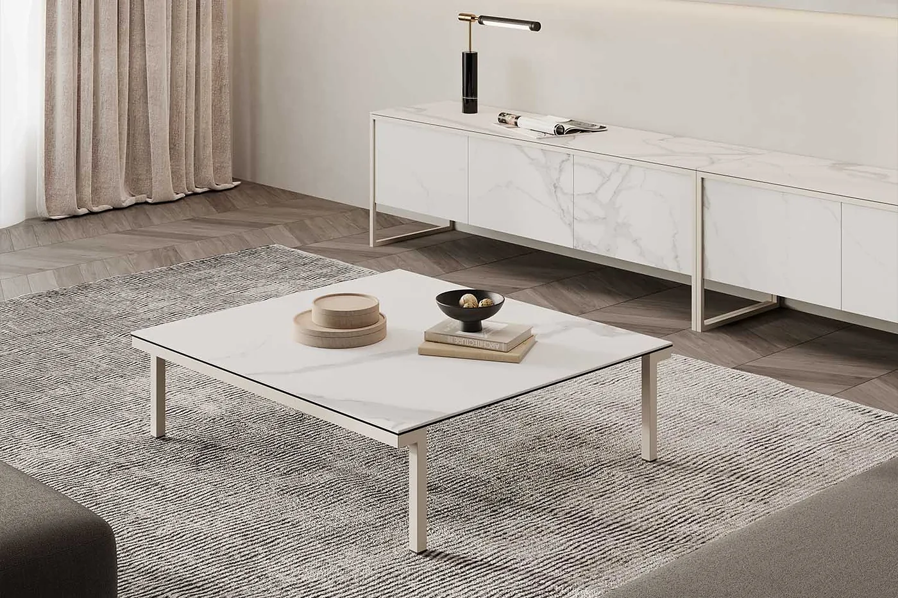

Conseils · Salon
Quelle taille pour ma table basse ?
Pour poser une tasse, vous tendez la main. Pour jouer aux cartes, vous vous penchez vers le milieu. Lequel de ces gestes revient le plus souvent chez vous ?

Assis, la main tendue vers la tasse.
Photo Mobliberica.
L’essai à la maison
Trois gestes.
Avec un carton ou une pile de livres à la place de la table.
-
01
La hauteur
Asseyez-vous sur votre coussin habituel. Posez un livre sur un support stable, à la hauteur du plateau envisagé, puis prenez-le et reposez-le. À quelques centimètres près, on sent si l’on doit se pencher plus qu’on ne le voudrait.
-
02
La distance
Rapprochez puis éloignez le carton : il faut pouvoir passer les jambes et atteindre la table sans se lever. Avec un relax, refaites l’essai repose-pieds ouvert.
-
03
La taille
Regardez depuis l’entrée de la pièce : la table doit sembler appartenir au canapé, sans le dépasser ni disparaître devant lui.
La forme
Selon le canapé et la pièce.
-
Devant un canapé droit
Une table rectangulaire ou ovale suit la longueur du canapé.
-
Dans l’angle d’un canapé d’angle
Une table carrée ou ronde se place au creux de l’angle, à portée des deux côtés.
-
Dans un petit salon
Deux petites tables qui se rangent l’une sous l’autre se déplacent selon le moment : une près du canapé, une près du fauteuil.
Si de jeunes enfants jouent dans le salon, regardez les angles et la matière du plateau.
Vos questions
Avant de choisir.
Table basse ronde ou rectangulaire ?
Ronde, on la contourne plus facilement ; rectangulaire, elle offre plus de surface devant un long canapé.
Peut-on assortir la table basse à la table de repas ?
Oui : reprendre le même plateau ou le même veinage relie le salon à la salle à manger. C’est le choix fait dans notre réalisation Séjour Goliath.
Une table basse avec rangement ?
Utile pour les télécommandes et les magazines. Vérifiez que le tiroir ou le plateau relevable s’ouvre sans toucher le canapé.
Quelle matière pour le plateau ?
Céramique, bois ou verre : comparez-les au magasin. Notre guide Céramique ou bois explique ce qui change.
Voir aussi
Continuer votre choix.
-
Les salons
Canapés fixes, relax et à composer.
Voir les salons -
Tables basses Akante
Les tables basses assorties aux tables de repas.
Voir les tables basses -
Quelle taille de canapé ?
Trouver la bonne longueur.
Lire le guide
Venez avec une photo de votre salon.
Avec la photo et la hauteur d’assise de votre canapé, nous comparons les tables avec vous. Avec ou sans rendez-vous.
- Lundi
- 13h30 – 18h30
- Mardi au samedi
- 10h30 – 18h30
- Dimanche
- Fermé
- Téléphone
- 064 46 07 72
- Livraison
- Par nos soins, dans le Hainaut (Binche, La Louvière, Mons, Charleroi…) et la province de Namur
Nous livrons aussi dans le nord de la France. Ailleurs, dont Bruxelles : sur demande.